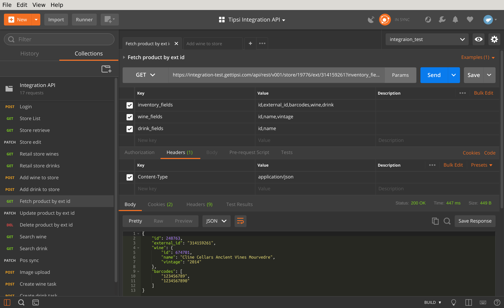
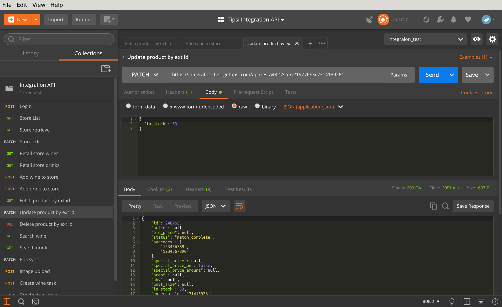
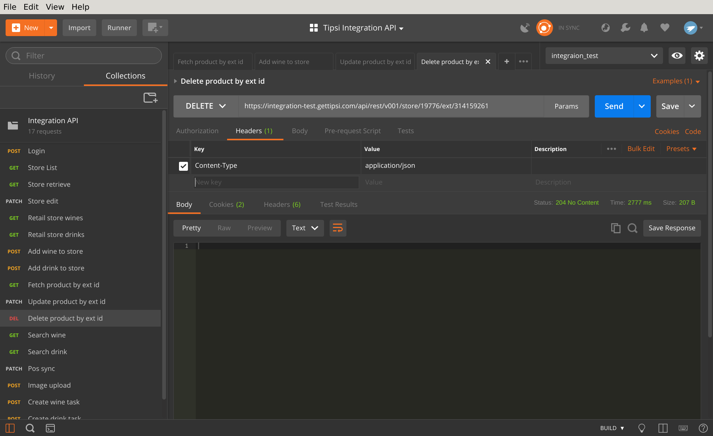

Access products using external ids¶
Using external id is convenient, when you have existing list of products and want to sync them to Tipsi, and later retrieve processed data back to your system. Fetching, updating and deleting product will use same product URL, only methods will differ:
https://integration-test.gettipsi.com/api/rest/v001/store/STORE_ID/ext/EXTERNAL_ID
Fetch product¶
Perform GET request to product URL https://integration-test.gettipsi.com/api/rest/v001/store/STORE_ID/ext/EXTERNAL_ID
Update product meta¶
Perform PATCH request to product URL https://integration-test.gettipsi.com/api/rest/v001/store/STORE_ID/ext/EXTERNAL_ID Only passed parameters will be modified, as conventionally PATCH performs partial updates, omitted parameters will remain unchanged. Please take into account that it will change only inventory level fields (in_stock, price and etc), all nested wine or drink attributes will remain unchanged even if you try to change them. Params should be formatted as JSON.
Please see RetailInvExtIdUpdateSerializer
Delete product¶
Perform DELETE request to product URL https://integration-test.gettipsi.com/api/rest/v001/store/STORE_ID/ext/EXTERNAL_ID
For successful deletion 204 “No Content” HTTP status expected.
See External id operations for more details.